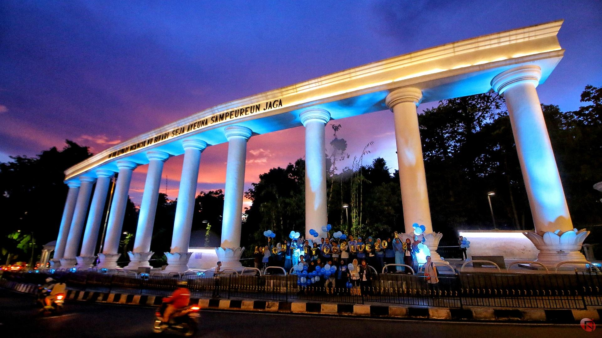
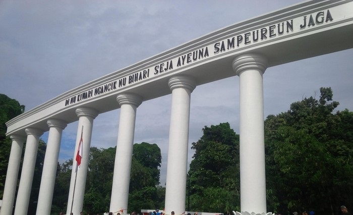

Siapa Yana Maulana ?
Saya adalah anak dari pasangan Jaynudin (Bangka Belitung) dan hayati (Pangkal Pinang) lahir di
Bogor saya adalah anak ke-2 dari 3
bersaudara, kakak saya bernama Jajang Nurjaman dan adik saya bernama Putri Mq ,saya lahir
pada tahun 1996 di Bogor-Jawa barat.
Saya menyukai Pemecahan masalah dan senang untuk membuat sistem yang dinamis.
Riwayat Pendidikan
Saya Tidak pernah mengenyam pendidikan Taman kanak-kanak (TK), karna pada tahun tersebut sekolah TK
tidak terjangkau jaraknya dari tempat saya tinggal, saya memasuki sekolah dasar pada tahun 2002
di SD Negeri Pasir angin 06 dan di nyatakan lulus pada tahun 2008, Btw saya juara 1 loh saat kelas
6.
Lalu saya melanjutkan pendidikan di SMP Negri 01 Cibarusah (bekasi) pada saat ini saya sekaligus
pesantren di pondok pesantren Al-magfiroh Didikan Kh, Maulana Malik Ibrohim (Cibarusah), Saya di
nyatakan lulus dari SMP dan pesantren pada tahun 2011.
Lalu saya melanjutkan Pendidikan di SMA muhammadiyah Cileungsi Pada tahun 2011 dan dinyatakan lulus
pada tahun 2014,
pada tahun ini saya mulai mengetahui dunia pemrograman dan saat lulus memutuskan untuk melanjutkan
studi di bidang IT.
setelah dinyatakan lulus pada tahun 2014 saya tidak langsung berkuliah di karenakan keterbatasan
biaya, karna itu saya bekerja di Kawasan cikarang kurang lebih 1 tahun, selanjutnya pada tahun 2015
saya melanjutkan pendidikan saya di Universitas Mercubuana.
saya di nyatakan lulus daru Univ. Mercubuana pada tahun 2019 dengan gelar S.kom.
Bogor-Jawa Barat
Dari Wikipedia bahasa Indonesia, ensiklopedia
bebas
1 / 3

Bogor malam hari
2 / 3

Bogor Siang hari
❮
❯
Kabupaten Bogor (Latin: Kabupatén Bogor) adalah sebuah kabupaten di
Provinsi Jawa Barat. Pusat pemerintahannya adalah Kecamatan Cibinong. Kabupaten Bogor berbatasan
dengan Kabupaten Tangerang dan Kota Tangerang Selatan, Kota Depok, Kota Bekasi, dan Kabupaten Bekasi
di utara; Kabupaten Karawang di timur, Kabupaten Cianjur di tenggara, Kabupaten Sukabumi di selatan
dan mengelilingi wilayah Kota Bogor.
Kabupaten Bogor terdiri atas 40 kecamatan, yang dibagi atas sejumlah desa dan kelurahan. Pusat
pemerintahan Kabupaten Bogor terletak di Kecamatan Cibinong, yang berada di sebelah utara Kota
Bogor.[6]
Sejarah Bogor
Hampir secara umum penduduk Bogor mempunyai keyakinan bahwa Kota Bogor mempunyai hubungan lokatif
dengan Kota Pakuan, ibukota Pajajaran. Asal-usul dan arti Pakuan terdapat dalam berbagai sumber. Di
bawah ini adalah hasil penelusuran dari sumber-sumber tersebut berdasarkan urutan waktu:
Naskah Carita Waruga Guru (1750-an). Dalam naskah berbahasa Sunda Kuna ini diterangkan bahwa nama
Pakuan Pajajaran didasarkan bahwa di lokasi tersebut banyak terdapat pohon Pakujajar.
K.F. Holle (1869). Dalam tulisan berjudul De Batoe Toelis te Buitenzorg (Batutulis di Bogor), Holle
menyebutkan bahwa di dekat Kota Bogor terdapat kampung bernama Cipaku, beserta sungai yang memiliki
nama yang sama. Di sana banyak ditemukan pohon paku. Jadi menurut Holle, nama Pakuan ada kaitannya
dengan kehadiran Cipaku dan pohon paku. Pakuan Pajajaran berarti pohon paku yang berjajar ("op rijen
staande pakoe bomen").
G.P. Rouffaer (1919) dalam Encyclopedie van Niederlandsch Indie edisi Stibbe tahun 1919. Pakuan
mengandung pengertian "paku", akan tetapi harus diartikan "paku jagat" (spijker der wereld) yang
melambangkan pribadi raja seperti pada gelar Paku Buwono dan Paku Alam. "Pakuan" menurut Fouffaer
setara dengan "Maharaja". Kata "Pajajaran" diartikan sebagai "berdiri sejajar" atau "imbangan"
(evenknie). Yang dimaksudkan Rouffaer adalah berdiri sejajar atau seimbang dengan Majapahit.
Sekalipun Rouffaer tidak merangkumkan arti Pakuan Pajajaran, namun dari uraiannya dapat disimpulkan
bahwa Pakuan Pajajaran menurut pendapatnya berarti "Maharaja yang berdiri sejajar atau seimbang
dengan (Maharaja) Majapahit". Ia sependapat dengan Hoesein Djajaningrat (1913) bahwa Pakuan
Pajajaran didirikan tahun 1433.